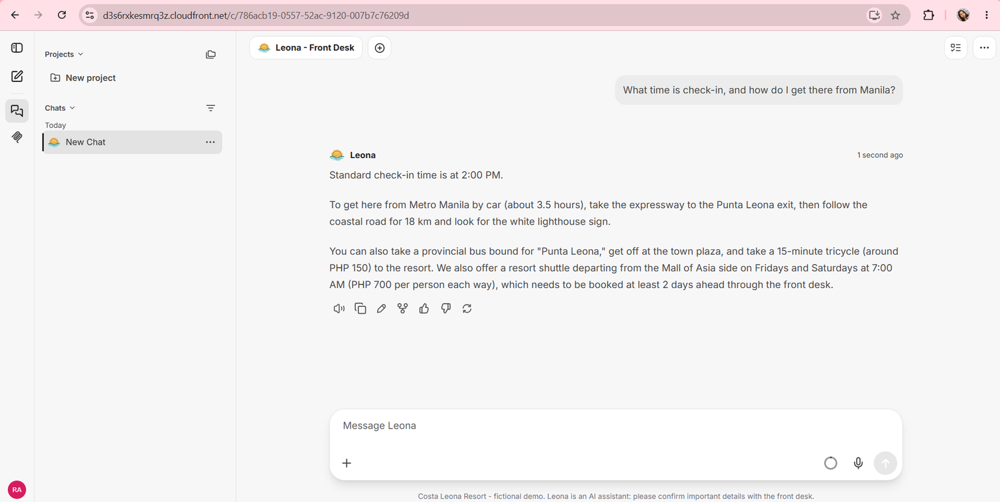

Your system
Base system and credit
| Item | Detail |
|---|---|
| Name / version | LibreChat (container image librechat-dev:latest pulled 2026-11-26; source v0.8.9 reviewed locally) |
| Source | https://github.com/danny-avila/LibreChat |
| Author | Danny Avila and the LibreChat contributors |
| Licence | MIT (LICENSE): reuse, modification and rebranding allowed with the copyright notice kept |
| What it did originally | A ChatGPT-style chat interface for many model providers, with user accounts |
The reskin
| Part | Original | Mine | Why |
|---|---|---|---|
| Name / branding | "LibreChat", feather logo, green theme | "Costa Leona Resort", sun-and-waves logo, teal/gold theme, favicon, browser title | A stranger must not recognise the original |
| Data / content | None - it knows nothing about any business | Six invented resort documents (about, rooms and rates, policies, amenities and dining, house rules, getting here and FAQ), 7.6 KB, stored in S3 | The data must be my own and contain no real people |
| Wording / prompts | Generic assistant, generic welcome text | Persona "Leona", hotel front-desk language, welcome text, footer disclaimer, strict "answer only from the knowledge" system prompt in the gateway | Domain language belongs to the resort world |
| Interface | Model picker, presets, agents, prompts, memories, web search | One fixed "Leona - Front Desk" assistant; all other features hidden; self-sign-up closed on AWS | Fewer ways to misuse it; simpler to operate |
| AWS services | None | S3 (content, backups), Parameter Store (secrets), CloudWatch (metrics, logs), SNS (alerts), EventBridge + SSM (schedules) | At least one integration beyond hosting |



Live URL: https://d3s6rxkesmrq3z.cloudfront.net. The model behind it is Google Gemini (gemini-3.5-flash-lite, falling back to gemini-3.5-flash)
through a free-tier key that belongs to its own Google project and can be revoked without affecting anything else.

Three test questions (two working, one failing)
| # | Question | Answer (as returned) | Verdict |
|---|---|---|---|
| T1 | What time is check-in, and how do I get there from Manila? | "Standard check-in time is at 2:00 PM." plus the driving route, the bus route and the Friday/Saturday shuttle (PHP 700) | Correct, all facts match the documents |
| T2 | Are pets allowed? | "Pets are not allowed at Costa Leona Resort, except for registered service animals." | Correct |
| T3 | We are 2 adults and 2 children aged 7 and 9. Which room should we book and how much per night? | Recommended the Lioness Family Villa (PHP 9,500) and said it "accommodates up to 4 adults and 1 child", without flagging that two children exceed that limit | Fails: unsafe recommendation, should have asked the front desk to confirm |
Other honest observations: asked "Where is the pool?", Leona correctly says it has no information on the pool's location (a gap in my documents, not a wrong answer); asked about Christmas Day it said the resort is open because the front desk is open 24 hours, which the documents do not actually state (an over-inference); and on the first live try the Gemini service answered HTTP 503 "high demand", a failure outside my control. Raw outputs: live_test_questions_2026-11-26.md.


How good is it? (E-04)
eval/run_eval.py, which asks each question and passes an answer only if it contains the
required fact(s) listed in eval/questions.csv (for example "1,200" for the late check-out fee). Categories: 18 facts, 3 policies, 3 rules,
3 unknown-to-the-system, 1 out-of-scope booking request, 2 safety.Caveats, stated plainly: I wrote the questions, so they match my documents; a keyword match cannot judge tone or subtle mistakes (T3 above would pass a keyword test for "9,500"); and 30 questions is a small sample. Results: Leona, baseline. A scheduled 5-question subset of the same script runs every hour on AWS (automation).
System card
1. What it does
Leona answers guests' questions about Costa Leona Resort (a fictional beach resort): room types and prices, check-in and check-out, amenities, house rules and directions. It only reads six documents and replies in English or Filipino.
2. Who uses it, and who must not
- Intended users: prospective and current guests asking general questions.
- Explicitly NOT for: medical, legal or emergency advice; making, changing or paying for bookings; any decision about an identifiable person (grading, ranking, eligibility, discipline); anyone who would share ID, card or health details in the chat.
3. Base system
LibreChat, https://github.com/danny-avila/LibreChat, Danny Avila and contributors, MIT licence. Originally a multi-provider chat interface.
4. What was changed (the reskin)
See the reskin table above.
5. Data
- Where it came from: written by me for this project; no source, no licence issues. Repository folder
knowledge/. - Size and format: six Markdown files, 7,612 bytes in total.
- Anything personal in it: No - all invented (names, phone numbers, e-mail addresses and prices are fictional; the e-mail domain is
.example). - Anything sent to a third-party AI service: each question plus the six documents, sent to the Google Gemini API. Only invented content is ever sent; the free tier's terms may allow the provider to retain prompts, which is why no real data is used. Personal-data check: [PENDING]
6. How good it is
- The one number: 30/30 on my test set.
- How measured: keyword scoring script, see above.
- Test cases: 30 (facts, policies, rules, questions the documents cannot answer, a booking request, two safety prompts).
- An example it gets wrong: T3, the family of two adults and two children recommended into a villa limited to one child.
7. How it is served
- Where it runs: EC2 t3.small, ap-southeast-1c, Docker; HTTPS through CloudFront.
- What calls it:
https://d3s6rxkesmrq3z.cloudfront.net(browser); internally LibreChat callshttp://gateway:8080/v1/chat/completionswith a bearer token. - Model: Google Gemini
gemini-3.5-flash-lite(fallbackgemini-3.5-flash), free tier. - If the model or service is unavailable: the gateway retries up to 3 times, then returns an error to the user ("Model provider error, please try again") and counts an
AnswersFailedmetric; a failure rate above 5% over 15 minutes e-mails me. Seen for real: HTTP 503 from Gemini.
8. Limitations and risks
- Cannot do: book, change, or pay; know anything outside the six documents (it should say so); give medical or legal advice; guarantee that its arithmetic or capacity checks are right.
- What could go wrong with the data: out-of-date or missing facts give wrong or empty answers (for example the pool location is not documented); model over-inference (Christmas opening).
- Misuse: a guest could try to make it reveal its instructions or ignore its rules; the system prompt forbids it and a test question covers it, but it is not a security boundary. Sign-up is closed on AWS to protect the free model quota.
- A user must always check: prices, dates, room capacity and policies with the front desk before relying on them.
9. Operational summary
- Code: https://github.com/teptepphhh/costa-leona-resort
- Backups: MongoDB hourly to S3 (kept 14 days); documents versioned in S3 and in Git.
- Healthy means: eight CloudWatch alarms are OK, hourly test questions pass at 80% or more.
- Contact: the operator named on the declaration.